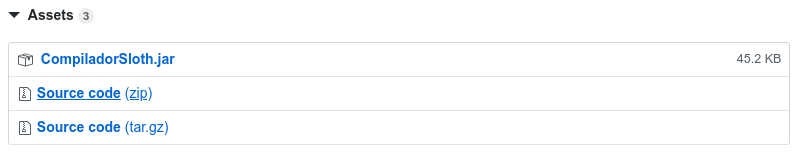

Instalar pelo código-fonte
Existem dois caminhos para compilar diretamente pelo código-fonte. O primeiro caminho é compilar desde o arquivo .jj, o qual é o arquivo lido pelo compilador JavaCC, essa compilação gerará várias classes Java. Essas classes Java já estão compiladas nos arquivos-fonte, então caso não tenha nescessidade de compilar o arquivo do JavaCC novamente a segunda maneira é ignorar a compilação do arquivo do JavaCC e ir direto para a compilação das classes javas e confiar que os arquivos nos arquivos-fonte estão corretos.
Para os diferentes tipos de instalação é nescessário ter um JDK instalado.
Compilação desde o arquivo do JavaCC
O Compilador Sloth foi produzida utilizando JavaCC, sua instalação é necessária para a criação dos arquivos base. Os passos para a instalação da ferramenta em linux e em windows são apresentados a seguir.
Windows
O download pode ser feito acessando o site oficial da ferramenta: JavaCC
É recomendado utilizar a versão 5.0, pois esta foi testada durante a realização do projeto e se apresenta estável. Após o download da ferramenta é necessário realizar a extração dos arquivos contidos na pasta zip. Recomenda-se armazenar a pasta do Javacc no meus documentos. Para que seja possível a utilização do javacc através de linha de comando no cmd do windows é necessário adicionar o local da pasta do JavaCC no path do sistema seguindo os seguintes passos:
- Abra o painel de controle
- Clique em "Sistema e Segurança"
- Em seguida selecione a opção "Sistema"
- No campo a esquerda procure por "Configurações avançadas do sistema"
- Na aba "Avançado", clique em "Variaveis de Ambiente"
- No campo "Variveis do sistema", procure pela variável PATH.
- Clique no botão "editar". (OBSERVAÇÂO: DE MANEIRA ALGUMA CLIQUE NO BOTAO EXCLUIR!!!)
- Copie ou digite o endereço da pasta \bin contida no diretório do JAVACC, clique em aplicar/ok.
- Teste a execução correta dos comandos abrindo o cmd e digitando a linha "javacc"
Para a compilação dos arquivos gerados é necessario também a instalação do Java. Instalando o jdk em windows: Faça o download do arquivo através do site, é necessário realizar o cadastro ou se identificar utilizando uma conta da Oracle. Também é necessario adcionar o caminho da pasta bin do jdk no path do sistema para que seja possível compilar os arquivos através do prompt de comando.
Linux
Para fazer a instalação do javacc em linux basta utilizar as seguintes linhas de comando.
Distribuições baseadas em Debian:
$ sudo apt-get install javaccDistribuições baseadas em ArchLinux:
$ sudo yay -S javacc
Download dos arquivos referentes ao compilador Sloth
Existem várias maneiras de se fazer o download do código-fonte do projeto.
- Baixando da pagina do projeto no Github. Basta apertar o grade botão verde
Clone ou Downloade fazer download do arquivo Zip. - Baixando através de uma ferramenta git utilizando o comando:
$ git clone https://github.com/wykke/CompiladorSloth - Baixando o código-fonte estável de uma Realese, basta selecionar
Source code (zip), nos assets.

Compilando o código-fonte
Utilizando Node.JS com npm
Caso tenha node.js e npm instalados no computador, existem alguns comandos que podem fascilitar a compilação, porem precisam do JavaCC instalado.
- Para buildar o projeto desde o JavaCC e executar um arquivo testes:
$ npm run buildTest - Para apenas rodar o arquivo de testes:
$ npm run runTest - Para buildar um arquivo
.jarna pasta./compilador/bin/:$ npm run buildJar
Sem a utilização do Node.JS
Com um terminal aberto no caminho da pasta do projeto, se o seu objetivo é compilar o arquivo JavaCC antes, basta utilizar o comando:
$ cd ./compilador/codigo
$ javacc ../CompiladorSloth.jj
O JavaCC gerará várias classes Java na pasta ./compilador/codigo/, as quais ja estavam lá caso não tenha modificado o arquivo Compiladosloth.jj.
Para compilar os arquivos Java, caso ainda não tenha utilizado, entre no diretório dos códigos:
$ cd ./compilador/codigo
Em seguida, para compilar os arquivos Java basta utilizar:
$ javac *.java
A partir desse ponto ja é possivel utilizar o Compilador Sloth, mas caso queira ter um arquivo .jar utilize:
$ jar -cfe ../bin/CompiladorSloth.jar CompiladorSloth *.class
Ele criará o arquivo .jar na pasta ./compilador/bin/.
Utilização
Caso tenha criado o arquivo jar
Para utilizar o Compilador Sloth basta utilizar o comando em um terminal:
$ java -jar ./compilador/bin/CompiladorSloth.jar input output
Sendo que ./compilador/bin/CompiladorSloth.jar é o caminho relativo até o diretório do arquivo .jar do compilador, servindo também para input e output. Todos os parâmetros são necessários.
Caso não tenha criado o arquivo Jar
Para utilizar o Compilador Sloth basta utilizar o comando em um terminal:
$ java ./compilador/codigo/CompiladorSloth.java input output
Sendo que ./compilador/codigo/CompiladorSloth.jar é o caminho relativo até o diretório do arquivo .java do compilador, servindo também para input e output. Todos os parâmetros são necessários.